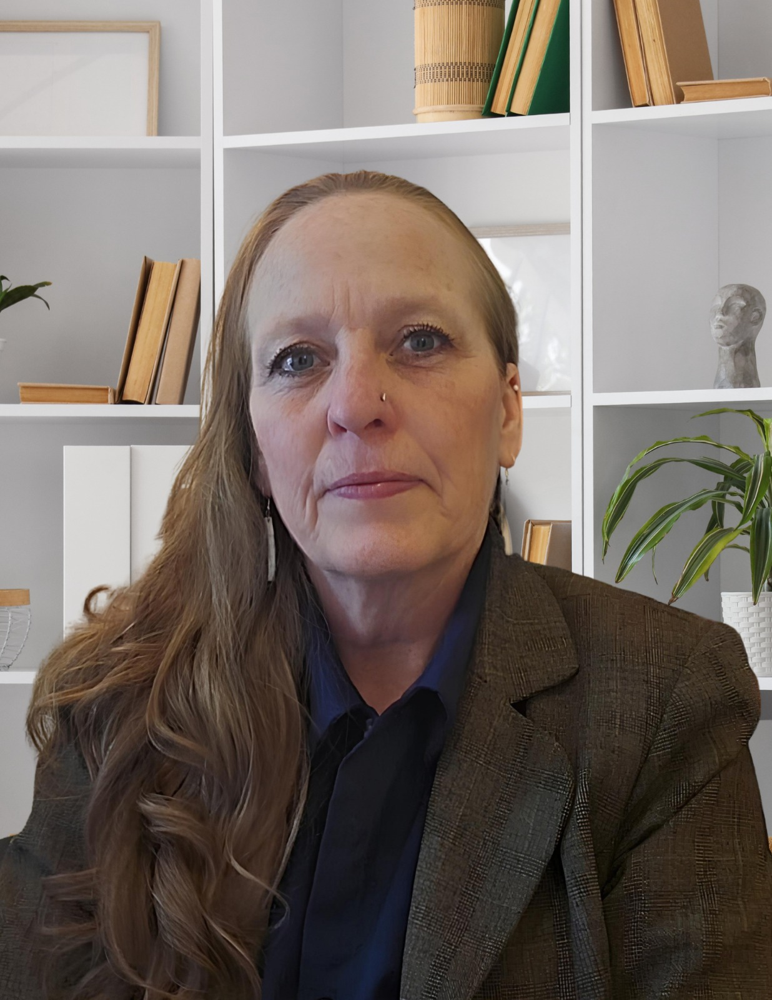
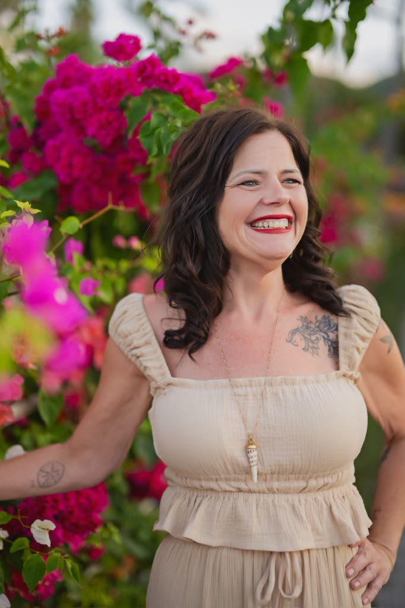

New Chapter Initiative
Meet our team!
New Chapter was built on a simple belief: that no woman should have
to face life's hardest moments alone. Our team combines lived
experience, professional expertise, and a deep commitment to helping
women and children find safety, rebuild confidence, and create
lasting change.
This is the wonderful team behind New Chapter
Initiative and a brief message from each of them:

Susie Beard - Founder and Board Member
Short Bio: Mother, coach, author, and advocate
for women rebuilding their lives after adversity. I believe that
with support, healing, and opportunity, every person can create
a new chapter.
What Inspires Me: Witnessing the courage it takes to start over and the
incredible transformation that follows. I am especially inspired
by the opportunity to change the world one life at a time by
helping children grow up in safer, healthier environments.
My Hope for the Future: That every woman and
child can find safety, healing, and the freedom to create a
future filled with hope and possibility. I believe that when we
help one child heal, we don't just change a life, we help change
the future of our world.

Erin Nordstrom - Board Member
Short Bio: Mother, entrepreneur, and
advocate for creating opportunities for people to rebuild their
lives. I am passionate about community, connection, and helping
others find hope during difficult transitions.
What Inspires Me:
Watching people rediscover their strength and realizing that a
new chapter is always possible, no matter where their story
begins.
My Hope for the Future: That
people learn to find happiness within their own minds, heal
their hearts, and in doing so, help heal the world. 💜